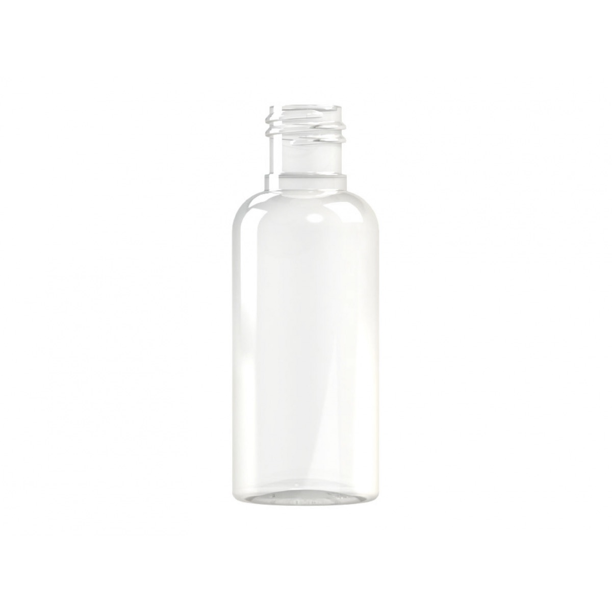
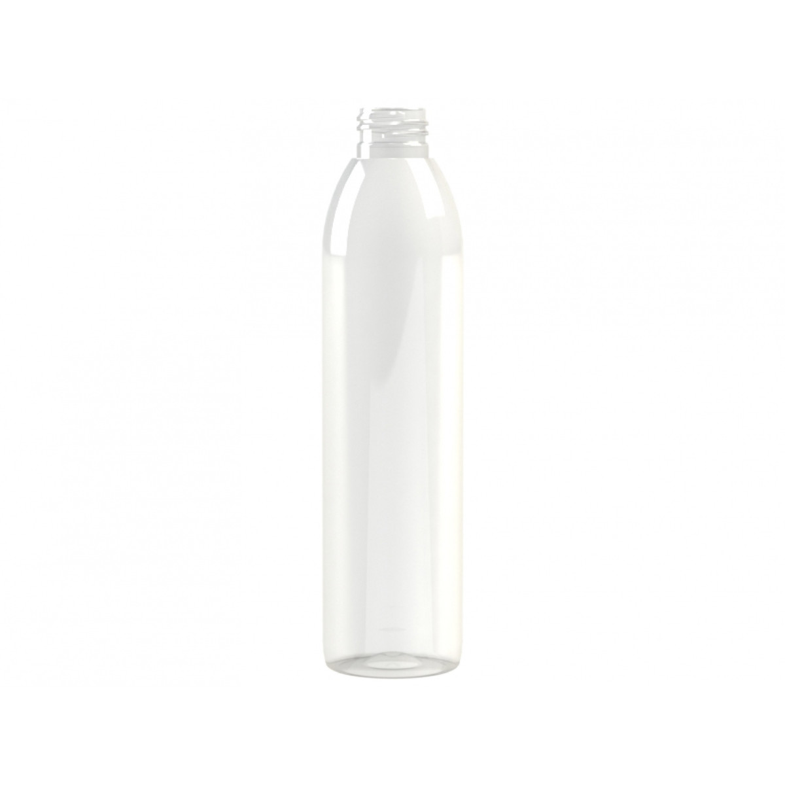

Envase PET 60 ml M1 cilíndrico 20/415 transparente
Envase PET transparente de 60 ml, forma cilíndrica y cuello 20/415.
Ver ficha oficial ↗ENVASES • CIERRES • PROYECTOS
Compara tres formatos PET y prepara volumen, cantidades y cierre para una revisión técnica comercial.

Tres referencias reales. Las opciones, precios y existencias se confirman en la tienda oficial.
Envase PET transparente de 60 ml, forma cilíndrica y cuello 20/415.
Ver ficha oficial ↗
Envase PET transparente de 100 ml, forma cónica y cuello 24/410.
Ver ficha oficial ↗
Envase PET transparente de 250 ml, forma cilíndrica y cuello 24/410.
Ver ficha oficial ↗TU LISTA LOCAL
Tu selección queda en este navegador. No reserva productos ni envía pedidos.
Envaselia distingue envases para alimentación, cosmética, farmacia y químicos.
La web enlaza una tienda de formatos estándar y una ruta de envases a medida.
Los formatos seleccionados especifican capacidad y cuello; esa coincidencia no certifica por sí sola el cierre o contenido.